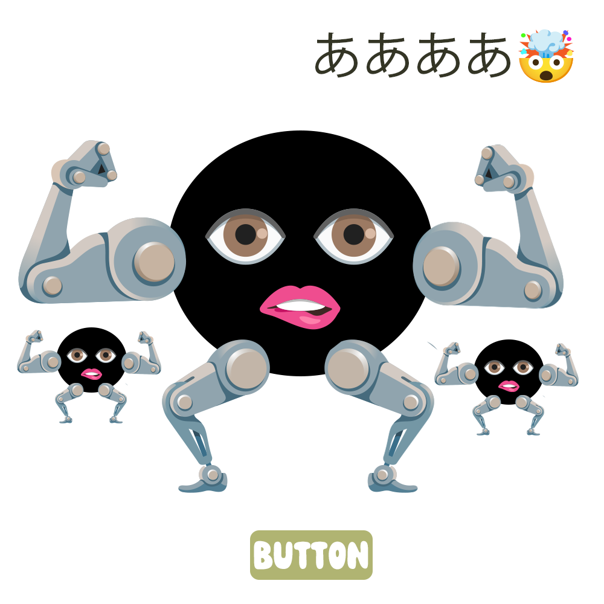

01. 概要と目的 / Overview
Photoshopの授業で制作したオリジナルキャラクター「コア」をベースに、Web上で実際に遊べるクリックゲームおよびその世界観を補完するWebサイトを制作しました。
単なる1枚のキャラクターイラストで終わらせず、ストーリーや世界観を体験型のWebコンテンツとして拡張。プログラミング未経験に近い状態から、AIツールを活用してアイデアをハイスピードで実装・プロトタイピングする実験的なプロジェクトです。
制作のねらいとアプローチ
- キャラクターの世界観展開： 「定時退社」をテーマにしたユーモアのある設定を構築し、インタラクティブなゲーム表現へと落とし込む。
- AIを活用した高速Web開発： コード記述のハードルを下げ、AIツールとの対話を通して約2時間という短時間でゲームロジック・画面実装を完結させる。
- 世界観のパッケージ化： ゲーム本体に留まらず、架空の「グッズ紹介ページ」を併設することでコンテンツ全体の完成度を高める。
02. 制作プロセスと取り組み / Process & Implementation
🎨 キャラクター制作と世界観設定
Photoshopの基本機能を駆使してオリジナルキャラクター「コア」をデザイン。「定時退社」をテーマにしたユーモア溢れる世界観とビジュアルを構築しました。
🤖 AIを活用したロジック＆サイト実装
プログラミングの複雑な記述にとらわれず、AIツールとの対話を通してゲームロジックやレスポンシブな画面構成を短時間で構築しました。
🛍 グッズページの併設によるパッケージング
ゲーム単体で終わらせず、架空の「グッズ紹介ページ」まで制作。作品全体の世界観に深みを持たせ、ひとつの独立したWebコンテンツとしてパッケージ化しました。
⚡ 2時間での超高速プロトタイピング
企画構想からビジュアル・コード生成・調整・検証までを約2時間で完結。アイデアをすばやく形にする即効性を検証しました。
03. キャラクター・グラフィック / Character & Assets
Photoshopの授業課題で作成した「コア」の元イラストおよび世界観を形づくるグラフィックパーツです。

04. 課題と今後の展望 / Challenge & Next Step
💡 直面した課題
短時間かつコーディング知識なしで完成させることを優先したため、ゲーム性が「クリックするだけ」のシンプルな仕組みにとどまり、ゲーム体験の深さに課題が残りました。
✨ 次のステップ
開発体験で得たAI活用の知見とJavaScriptの基礎知識をベースに、今後はスコア保存機能やストーリー分岐、アニメーション演出を強化した高度なコンテンツ制作に挑戦します。